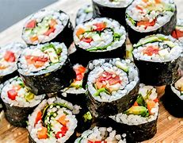
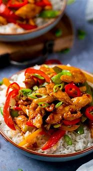

Spaghetti
Ingredients:
- Spaghetti noodles
- Tomato sauce
- Ground beef or meatballs
- Onions, garlic, salt, and pepper for seasoning
Instructions:
- Cook spaghetti noodles according to package instructions.
- In a separate pan, brown ground beef or meatballs with onions and garlic.
- Add tomato sauce to the meat mixture and simmer for 10-15 minutes.
- Serve meat sauce over cooked spaghetti noodles.
Lasagna
Ingredients:
- Lasagna noodles
- Ground beef or Italian sausage
- Ricotta cheese
- Mozzarella cheese
- Parmesan cheese
- Tomato sauce
- Onions, garlic, salt, and pepper for seasoning
Instructions:
- Cook lasagna noodles according to package instructions.
- In a pan, brown ground beef or Italian sausage with onions and garlic.
- In a separate bowl, mix ricotta cheese with salt, pepper, and parmesan cheese.
- In a baking dish, layer noodles, meat sauce, ricotta mixture, and mozzarella cheese. Repeat layers.
- Bake in the oven at 375°F (190°C) for 30-35 minutes until bubbly and golden brown.
RICE
- Measure the rice: Use a measuring cup to measure the desired amount of rice.
- Rinse the rice: Rinse the rice under cold water until the water runs clear to remove excess starch.
- Combine rice and water: Add the rinsed rice to a pot and add the appropriate amount of water (usually 2 parts water to 1 part rice).
- Boil the water: Bring the water to a boil over high heat.
- Simmer: Once the water is boiling, reduce the heat to low, cover the pot, and simmer for 18-20 minutes, or until the rice is tender and the water is absorbed.
- Rest: Remove the pot from the heat and let the rice rest, covered, for 5 minutes.
- Fluff and serve: Use a fork to fluff the rice and serve hot.
Tacos
Tacos are a Mexican dish. Cook seasoned meat (beef, chicken, or pork) and fill corn or flour tortillas with the meat, along with lettuce, cheese, salsa, and sour cream.
Guacamole
Guacamole is a Mexican avocado dip. Mash ripe avocados and mix with chopped onions, tomatoes, cilantro, lime juice, and salt. Serve with tortilla chips.
Biryani
Biryani is a fragrant Indian rice dish. Cook basmati rice with spices, chicken, or vegetables in layers. Serve hot with raita (yogurt sauce).
Naan Bread
Naan is a popular Indian flatbread. Mix flour, yeast, yogurt, and water to make a dough. Roll out and cook in a hot tandoor or skillet until puffed and golden.
Fried Rice

Fried rice is a Chinese rice dish. Cook rice and let it cool. Stir-fry with vegetables, eggs, and your choice of protein (chicken, shrimp, or tofu) in a wok with soy sauce and seasonings.
Spring Rolls
Spring rolls are Chinese appetizers. Fill rice paper wrappers with cooked shrimp, vegetables, and noodles. Roll tightly and serve with sweet and sour sauce.
Coq au Vin
Coq au Vin is a French chicken dish. Sear chicken pieces and simmer with red wine, mushrooms, onions, and bacon until tender. Serve hot with crusty bread.
Ratatouille
Ratatouille is a French vegetable stew. Sauté onions, garlic, bell peppers, zucchini, and tomatoes. Season with herbs and simmer until vegetables are tender. Serve hot or cold.
Sushi
Sushi is a Japanese dish of seasoned rice and raw fish. Spread seasoned sushi rice on seaweed, add your choice of fillings (fish, vegetables, or tofu), and roll tightly. Slice and serve with soy sauce and wasabi.
Ramen
Ramen is a Japanese noodle soup. Cook ramen noodles and serve in a flavorful broth with sliced pork, boiled eggs, green onions, and nori (seaweed).
Moussaka
Moussaka is a Greek eggplant casserole. Layer sautéed eggplant slices with seasoned ground lamb or beef, tomatoes, and bechamel sauce. Bake until golden and bubbly.
Gyros
Gyros are Greek sandwiches. Grill thinly sliced seasoned meat (usually lamb or chicken) and serve in a pita with tomatoes, onions, lettuce, and tzatziki sauce.
Beef Stroganoff
Ingredients:
- 500g beef sirloin, thinly sliced
- 1 onion, thinly sliced
- 2 cloves garlic, minced
- 200g mushrooms, sliced
- 1 cup beef broth
- 1 cup sour cream
- 2 tbsp flour
- 2 tbsp butter
- Salt and pepper to taste
- 1 tbsp olive oil
- Cooked egg noodles for serving
Instructions:
- Heat olive oil and butter in a large skillet over medium heat. Add onions and garlic, cook until softened.
- Add beef slices, cook until browned on all sides. Remove beef from skillet and set aside.
- In the same skillet, add mushrooms and cook until tender.
- Sprinkle flour over the mushrooms, stir to combine. Gradually pour in beef broth, stirring constantly until the sauce thickens.
- Return beef to the skillet, stir in sour cream. Season with salt and pepper to taste.
- Simmer for a few minutes until heated through. Serve over cooked egg noodles.
Vegetable Pad Thai
Ingredients:
- 200g rice noodles
- 2 tbsp vegetable oil
- 2 cloves garlic, minced
- 1 red bell pepper, thinly sliced
- 1 carrot, julienned
- 100g tofu, cubed
- 2 eggs, lightly beaten
- 2 tbsp soy sauce
- 2 tbsp tamarind paste
- 1 tbsp brown sugar
- 1 cup bean sprouts
- 2 green onions, chopped
- Crushed peanuts for garnish
Instructions:
- Cook rice noodles according to package instructions. Drain and set aside.
- Heat vegetable oil in a large skillet over medium heat. Add garlic, bell pepper, carrot, and tofu. Cook until vegetables are tender.
- Push vegetables to one side of the skillet, pour beaten eggs into the other side. Scramble until cooked through.
- Add cooked noodles to the skillet, along with soy sauce, tamarind paste, and brown sugar. Toss everything together until well combined.
- Stir in bean sprouts and green onions. Cook for another minute.
- Serve hot, garnished with crushed peanuts.
Spaghetti Carbonara
Ingredients:
- 400g spaghetti
- 200g pancetta or bacon, diced
- 4 large eggs
- 1 cup grated Parmesan cheese
- 4 cloves garlic, minced
- 1/4 cup fresh parsley, chopped
- Salt and black pepper to taste
Instructions:
- Cook spaghetti according to package instructions. Drain and set aside.
- In a skillet, cook diced pancetta or bacon until crispy. Remove from heat and set aside.
- In a bowl, whisk together eggs, Parmesan cheese, minced garlic, chopped parsley, salt, and black pepper.
- Add cooked spaghetti to the skillet with the cooked pancetta or bacon. Pour the egg mixture over the spaghetti and toss quickly to coat evenly.
- Continue to cook over low heat for a few minutes until the sauce thickens slightly and coats the spaghetti.
- Remove from heat and serve immediately, garnished with additional Parmesan cheese and parsley if desired.
Chicken Stir-Fry
Ingredients:
- 500g chicken breast, thinly sliced
- 2 tbsp soy sauce
- 2 tbsp oyster sauce
- 1 tbsp sesame oil
- 2 cloves garlic, minced
- 1 inch fresh ginger, grated
- 2 cups mixed vegetables (such as bell peppers, broccoli, carrots, snap peas)
- 2 tbsp vegetable oil
- Salt and pepper to taste
Instructions:
- In a bowl, marinate sliced chicken breast with soy sauce, oyster sauce, sesame oil, minced garlic, and grated ginger for about 15-20 minutes.
- Heat vegetable oil in a large skillet or wok over high heat. Add marinated chicken and stir-fry until cooked through.
- Add mixed vegetables to the skillet and continue to stir-fry until they are tender yet crisp.
- Season with salt and pepper to taste.
- Serve hot over steamed rice or noodles.